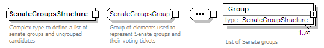

| diagram |  | ||
| namespace | http://www.aec.gov.au/xml/schema/mediafeed | ||
| children | Group | ||
| annotation |
|
||
| source | <xs:complexType name="SenateGroupsStructure"> <xs:annotation> <xs:documentation>Complex type to define a list of senate groups and ungrouped candidates</xs:documentation> </xs:annotation> <xs:group ref="SenateGroupsGroup"/> </xs:complexType> |